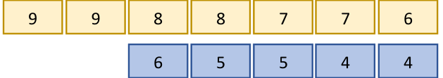
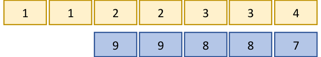

Page No. 19 — Figure it Out
- Using all digits from 0–9 exactly once (the first digit cannot be 0) to create a 10-digit number, write the —
- Largest multiple of 5
Ans: largest multiple of 5 = 9876543210
- Smallest even number
Ans: The smallest such even number = 1023456798
- Largest multiple of 5
- The number 10,30,285 in words is ten lakhs thirty thousand two hundred eighty-five, which has 42 letters. Give a 7-digit number name which has the maximum number of letters.
Ans: One such number is 77,77,777, which has 60 letters.
- Write a 9-digit number where exchanging any two digits results in a bigger number. How many such numbers exist?
Ans: One such number is 987654312. Exchanging last two digits, we get 987654321, which is bigger number than the initial number. Try more!
- Strike out 10 digits from the number 12345123451234512345 so that the remaining number is as large as possible.
Ans: 5534512345
- Suppose you write down all the numbers 1, 2, 3, 4, …, 9, 10, 11, and so on. The tenth digit you write is ‘1’ and the eleventh digit is ‘0’, as part of the number 10. (This question can be solved in different ways. One of the ways is —)
- What would the 1000th digit be? At which number would it occur?
Ans: Digits from 1 to 9 = 9 digits
Digits from 10 to 99 = \(99 - 10 + 1 = 90\) numbers \(\times 2 = 180\) digits
Total digits from 1 to 99 = \(9 + 180 = 189\) digits
Remaining digits to reach 1000th digit = \(1000 - 189 = 811\)
Number of 3-digit numbers = \(\frac{811}{3} = 270\) full numbers + 1 digit left over.
The first 3-digit number is 100
270th 3-digit number is \(100 + 270 - 1 = 369\)The next number is 370. The first digit of 370, which is 3, is the 1000th digit.
- What number would contain the millionth digit?
Ans: The millionth digit occurs in the number \(185184 + 1 = 1{,}85{,}185\).
- When would you have written the digit ‘5’ for the 5000th time?
Ans: 13995
- What would the 1000th digit be? At which number would it occur?
- A calculator has only ‘+10,000’ and ‘+100’ buttons. Write an expression describing the number of button clicks to be made for the following numbers:
- 20,800
Ans: \(20{,}800 = (2 \times 10{,}000) + (8 \times 100)\)
Total clicks \(= 2 + 8 = 10\) button clicks. - 92,100
Ans: \(92{,}100 = (9 \times 10{,}000) + (21 \times 100)\)
Total clicks \(= 9 + 21 = 30\) button clicks. - 1,20,500
Ans: \(1{,}20{,}500 = (12 \times 10{,}000) + (5 \times 100)\)
Total clicks \(= 12 + 5 = 17\) button clicks. - 65,30,000
Ans: \(65{,}30{,}000 = (653 \times 10{,}000)\)
Total clicks = 653 button clicks. - 70,25,700
Ans: \(70{,}25{,}700 = (702 \times 10{,}000) + (57 \times 100)\)
Total clicks = 759 button clicks.
- 20,800
- How many lakhs make a billion?
Ans: 10,000 lakh make a billion.
- You are given two sets of number cards numbered from 1–9. Place a number card in each box below to get the (a) largest possible sum (b) smallest possible difference of two resulting numbers.
(a) Ans:

Sum = 1,00,54,320
(b) Ans:

Difference = 10,22,447
- You are given some number cards: 4000, 13000, 300, 70000, 150000, 20, 5. Using the cards get as close as you can to the numbers below using any operation you want. Each card can be used only once for making a particular number.
- 1,10,000: \(4000 \times (20 + 5) + 13000 = 1{,}13{,}000\)
- 2,00,000:
Ans: closest estimate \(= 1{,}50{,}000 + 70{,}000 - (4000 \times 5) = 2{,}00{,}000\).
- 5,80,000:
Ans: closest estimate \(= (1{,}50{,}000 \times 4) - (4000 \times 5) = 5{,}80{,}000\).
- 12,45,000:
Ans: closest estimate \(= (70{,}000 \times 20) - 1{,}50{,}000 - 4{,}000 - (300 \times 5) = 12{,}44{,}500\).
- 20,90,800:
Ans: closest estimate \(= (1{,}50{,}000 \times 14) + 4{,}000 - 13{,}000 = 20{,}91{,}000\).
- Find out how many coins should be stacked to match the height of the Statue of Unity. Assume each coin is 1 mm thick.
Ans:
Height of each coin = 1 mm
Height of Statue of Unity \(= 180\) m \(= 180 \times 100 \times 10 = 1{,}80{,}000\) mm.
Number of coins to be stacked \(= 1{,}80{,}000\) mm \(\div\) 1 mm \(= 1{,}80{,}000\) coins. - Grey-headed Albatrosses have a roughly 7-feet wide wingspan. They are known to migrate across several oceans. Albatrosses can cover about 900–1000 km in a day. One of the longest single trips recorded is about 12,000 km. How many days would such a trip take to cross an ocean approximately?
Ans:
Estimated number of days if it flies 900 km/day \(= 12{,}000 \div 900 = 13.3\) days
Estimated number of days if it flies 1000 km/day \(= 12{,}000 \div 1000 = 12\) days
Hence it would take approximately 12 to 14 days for a grey headed albatross to complete a 12,000 km trip to cross an ocean. - A bar-tailed godwit holds the record for the longest recorded non-stop flight. It travelled 13,560 km from Alaska to Australia without stopping. Its journey started on 13 October 2022 and continued for about 11 days. Find out the approximate distance it covered every day. Find out the approximate distance it covered every hour.
Ans:
Distance covered per day \(= 13{,}560\) km \(\div\) 11 days \(= 1232.73\) km or 1233 km.
Distance covered per hour \(= 1233 \div 24 = 51.36\) km or 51 km. - Bald eagles are known to fly as high as 4500–6000 m above the ground level. Mount Everest is about 8850 m high. Aeroplanes can fly as high as 10,000–12,800 m. How many times bigger are these heights compared to Somu’s building?
Ans:
Height of Somu’s building = 40 m(i) Bald eagles’ flight height = 4500–6000 m
Lower estimate \(= 4500 \div 40 = 112.5\) times
Upper estimate \(= 6000 \div 40 = 150\) times
Bald eagles fly about 112 to 150 times higher than Somu’s building.(ii) Mount Everest height = 8850 m
Now, \(8850 \div 40 = 221.25\)
Mount Everest is approximately 221 times taller than Somu’s building.(iii) Aeroplanes flight height = 10,000–12,000 m
Lower estimate \(= 10{,}000 \div 40 = 250\)
Upper estimate \(= 12800 \div 40 = 320\).
Airplanes fly about 250 to 320 times as high as Somu’s building.